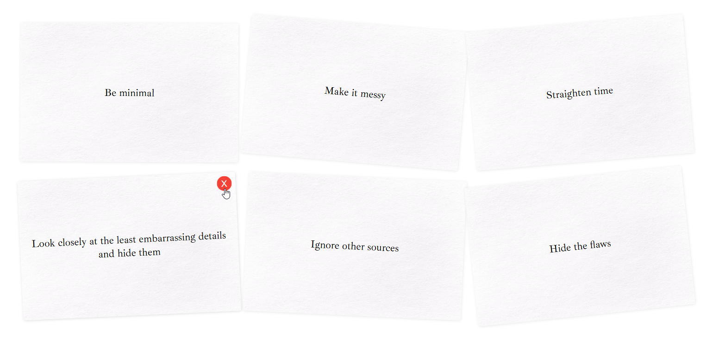

Obscure Stratagems

A parody and ode to Oblique Strategies, originally by Brian Eno and Peter Schmidt, I worked on this project to get to grips with Next.js, to create something simple but "universal".
I wanted to make the project accessible (for screenreaders and for those with different motion needs), mobile-friendly, responsive, and supportive of dark/light modes. Missing is localisation, which is beyond my monolingual means.